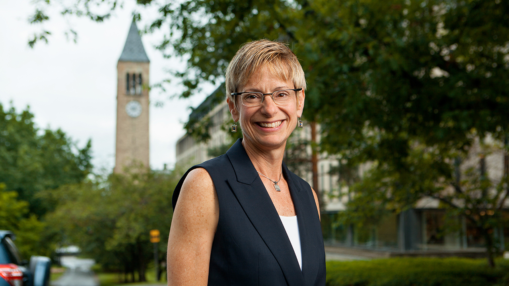
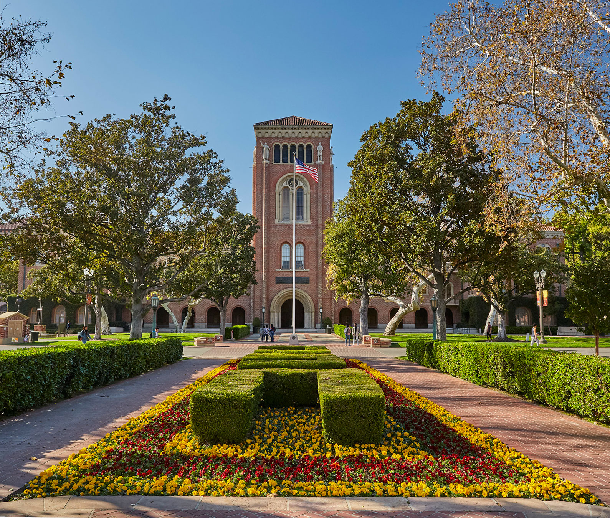

The Association of American Universities on Monday released the overall results of a survey that asked students at 27 universities about their experiences with sexual assault and sexual misconduct, drawing responses from more than 150,000 students.
More than 20 percent of female undergraduates at an array of prominent universities said this year they were victims of sexual assault and misconduct, echoing findings elsewhere, according to one of the largest studies ever of college sexual violence.
Here are key data and reactions from universities that participated in the AAU’s joint study of sexual assault this year. All schools are AAU members, except Dartmouth College. This file will be updated.
(For comparison, here are some overall figures: The survey found that 23 percent of undergraduate women and 5 percent of undergraduate men said they were victims of non-consensual sexual contact – ranging from penetration to sexual touching — due to force or incapacitation. Eleven percent of undergraduate women said they were victims of non-consensual penetration or attempted penetration.
Another key overall finding: 20 percent of students said sexual assault and misconduct is very or extremely problematic on their own campus. The AAU survey had a total response rate of 19 percent.)
Brown University:
Twenty-five percent of undergraduate women said they were victims of non-consensual sexual contact through force or in situations when they were incapacitated and unable to consent. Among undergraduate men, the rate was 7 percent.
Ten percent of undergraduate women said they suffered incidents involving non-consensual sexual penetration or attempted penetration. Thirty-five percent of students said sexual assault and misconduct is very or extremely problematic at the school.
The survey response rate was 36 percent.
“For Brown, the report reinforces our Sexual Assault Task Force’s call to action for confronting the very real problem of gender-based harassment and violence,” Brown President Christina Paxson said. “The results of the survey establish a clear baseline against which we can assess ourselves going forward and will continue to inform ongoing education and prevention efforts to address these problems.”
California Institute of Technology:
Thirteen percent of undergraduate women said they were victims of non-consensual sexual contact through force or in situations when they were incapacitated and unable to consent. Among undergraduate men, the rate was five percent.
Six percent of undergraduate women said they suffered incidents involving non-consensual sexual penetration or attempted penetration. Two percent of students said sexual assault is very or extremely problematic at the school.
The survey response rate was 47 percent.
“I am encouraged that for the most part our students find the campus to be a comparatively safe environment in which to live and learn,” Thomas F. Rosenbaum, president of Caltech, said in a statement.
“The climate survey results also show us there are areas where added vigilance is warranted, and Caltech is committed to addressing these issues and maintaining a healthy and supportive environment for all members of our community.”
Case Western Reserve University:
Twenty percent of undergraduate women said they were victims of non-consensual sexual contact through force or in situations when they were incapacitated and unable to consent. Among undergraduate men, the rate was nearly 6 percent.
Ten percent of undergraduate women said they suffered incidents involving non-consensual sexual penetration or attempted penetration. Eight percent of students said sexual assault and misconduct is very or extremely problematic at the school.
The survey response rate was nearly 30 percent.
“These results provide invaluable information for us in terms of evaluating our efforts to date and identifying areas most in need of improvement,” said Lou Stark, vice president for student affairs. “While any misconduct that our students suffer is regrettable, we do feel that the data show we have raised awareness of the issue and the university’s commitment to address it.”
Columbia University:
Twenty-three percent of undergraduate women said they were victims of non-consensual sexual contact through force or in situations when they were incapacitated and unable to consent. Among undergraduate men, the rate was 4 percent.
Eleven percent of undergraduate women said they suffered incidents involving non-consensual sexual penetration or attempted penetration. Twenty-three percent of students said sexual assault is very or extremely problematic at the school.
The survey response rate was 26 percent.
In a letter to the campus community, Columbia’s president, Lee Bollinger, wrote of the AAU survey: “Its core data confirm our understanding that sexual harassment and assault take place at unacceptable rates and cause harm both to individuals and to our community. As members of a university community, each of us must recognize this happens in our midst, act to prevent it, and provide support when incidents occur.” He announced that a task force of students, faculty and administrators would work on strategies.
“Sexual assault is a serious national problem, occurring with unacceptable frequency at Cornell and on campuses across the country.
- Dr. Elizabeth Garrett, late former president of Cornell University
Cornell University:
Twenty-three percent of undergraduate women said they were victims of non-consensual sexual contact through force or in situations when they were incapacitated and unable to consent. Among undergraduate men, the rate was 6 percent.
Ten percent of undergraduate women said they suffered incidents involving non-consensual sexual penetration or attempted penetration. Seventeen percent of students said sexual assault and misconduct is very or extremely problematic at the school.
The survey response rate was 19 percent.
“The results also underscore there is still more work to be done to educate and to help protect our students. Even one instance of sexual assault on our campus is one too many.”
Former President Garrett on Cornell's Campus in 2015. | Photo by Robert Barker Copyright: © Cornell University Marketing Group “On campus last summer”
Dartmouth College:
Twenty-eight percent of undergraduate women said they were victims of non-consensual sexual contact through force or in situations when they were incapacitated and unable to consent. Among undergraduate men, the rate was 5 percent.
Thirteen percent of undergraduate women said they suffered incidents involving non-consensual sexual penetration or attempted penetration. Thirty percent of students said sexual assault and misconduct is very or extremely problematic at the school.
The survey response rate was 42 percent.
“We hope that you will read these materials,” Dartmouth President Phil Hanlon and Provost Carolyn Dever said in a letter to the community as they released the survey results. “They confirm our understanding that sexual assault and harassment are significant challenges at Dartmouth and on campuses across the nation. We must make progress on these very serious issues of student safety and campus climate.”
Harvard University:
Twenty-six percent of undergraduate women said they were victims of non-consensual sexual contact through force or in situations when they were incapacitated and unable to consent. Among undergraduate men, the rate was 7 percent.
Twelve percent of undergraduate women said they suffered incidents involving non-consensual sexual penetration or attempted penetration. Sixteen percent of students said sexual assault and misconduct is very or extremely problematic at the school.
The survey response rate was 53 percent (highest amongst all schools).
“These deeply disturbing survey results must spur us to an even more intent focus on the problem of sexual assault,” Harvard President Drew Gilpin Faust said in a letter to the university community.
“That means not just how we talk to one another about it, not just what we say in official pronouncements, but how we actually treat one another and live our lives together.
“All of us share the obligation to create and sustain a community of which we can all be proud, a community whose bedrock is mutual respect and concern for one another.”
Iowa State University:
Nineteen percent of undergraduate women said they were victims of non-consensual sexual contact through force or in situations when they were incapacitated and unable to consent. Among undergraduate men, the rate was 3 percent.
Nine percent of undergraduate women said they suffered incidents involving non-consensual sexual penetration or attempted penetration. Thirteen percent of students said sexual assault is very or extremely problematic at the school.
The survey response rate was 16 percent.
“While it’s encouraging to see that many students take action when they see situations they believe could lead to sexual assault or misconduct, we still have room for improvement,” said Pamela Anthony, dean of students at Iowa State.
“We also want students to understand that if they are victims of sexual assault or misconduct, reporting it will allow us to better help them.”
Michigan State University:
Twenty-five percent of undergraduate women said they were victims of non-consensual sexual contact through force or in situations when they were incapacitated and unable to consent. Among undergraduate men, the rate was four percent.
Twelve percent of undergraduate women said they suffered incidents involving non-consensual sexual penetration or attempted penetration. Twenty-two percent of students said sexual assault is very or extremely problematic at the school.
The survey response rate was 18 percent.
“The survey underscores that sexual assault on college campuses is a serious national issue,” Michigan State’s president, Lou Anna Simon said in announcing the results to the campus community Monday. “I take no comfort that our preliminary analysis of this data suggests the experiences of some of our students are statistically similar to those at other AAU institutions.
“No member of our community should be threatened by sexual violence.
- Dr. Lou Anna Simon, former president of Michigan State University
Ohio State University:
24 percent of undergraduate women said they were victims of non-consensual sexual contact through force or in situations when they were incapacitated and unable to consent. Among undergraduate men, the rate was five percent.
Eleven percent of undergraduate women said they suffered incidents involving non-consensual sexual penetration or attempted penetration. Nineteen percent of students said sexual assault is very or extremely problematic at the school.
The survey response rate was 18 percent.
“Campuses must be safe places to learn and grow,” said Michael Drake, Ohio State’s president, who last week announced Buckeyes ACT, which combines new initiatives with existing programs to prevent and respond to sexual misconduct on campus.
“Ohio State’s participation in this survey offers valuable insights from our students as the university provides leadership on this national issue.”
Purdue University:
Twenty-two percent of undergraduate women said they were victims of non-consensual sexual contact through force or in situations when they were incapacitated and unable to consent. Among undergraduate men, the rate was five percent.
Eleven percent of undergraduate women said they suffered incidents involving non-consensual sexual penetration or attempted penetration. Eleven percent of students said sexual assault is very or extremely problematic at the school.
The survey response rate was 13 percent.
“We recognize that sexual assault and misconduct is a national issue, and our participation in this survey helps us to understand both the national and our local climate,” President Mitch Daniels said as the results were released to the campus community Monday morning.
“In reality, we have to do what is right for our students right here at Purdue no matter Purdue’s disappointingly low response rate to the survey or the campus climate elsewhere. Even one incident of this sort is unacceptable, and we will use what we are learning from these results to focus on problems that are clear.”
Texas A&M University:
Fifteen percent of undergraduate women said they were victims of non-consensual sexual contact through force or in situations when they were incapacitated and unable to consent. Among undergraduate men, the rate was three percent.
Seven percent of undergraduate women said they suffered incidents involving non-consensual sexual penetration or attempted penetration. Five percent of students said sexual assault is very or extremely problematic at the school.
The survey response rate was nine percent.
The university’s president, Michael K. Young, said he was heartened that it didn’t seem to be as widespread a problem on his campus as elsewhere, “and we were very heartened by how strongly the students seemed to feel that we would take it seriously and would do the right thing — that was much higher than the national average.”
He attributed some of that to the culture on campus. “At the end of the day, Aggies simply don’t treat each other this way.”
University of Arizona:
Twenty-two percent of undergraduate women said they were victims of non-consensual sexual contact through force or in situations when they were incapacitated and unable to consent. Among undergraduate men, the rate was six percent.
Eleven percent of undergraduate women said they suffered incidents involving non-consensual sexual penetration or attempted penetration. Seventeen percent of students said sexual assault is very or extremely problematic at the school.
The survey response rate was eight percent.
In a memo to the campus community, the university’s president Ann Weaver Hart said, “The survey confirms much of what we already knew. Sexual assault and misconduct is a significant issue for the UA and some people are more affected than others.
“The survey indicated 20 percent of all women and 23 percent of people who identify as other than heterosexual are impacted the most.”
University of Florida:
Twenty percent of undergraduate women said they were victims of non-consensual sexual contact through force or in situations when they were incapacitated and unable to consent. Among undergraduate men, the rate was 3 percent.
Ten percent of undergraduate women said they suffered incidents of non-consensual sexual penetration or attempted penetration. Eighteen percent of students said sexual assault is very or extremely problematic at the school.
The survey response rate was 17 percent.

Photo of the University of Florida's campus. | Photo found on the Unviversity's website with no attribution.
“UF volunteered to participate in this survey because of the importance of this issue. The survey gives us the ability to learn about our students’ experiences and use that data to make our community a safer one for all students,” Jen Day Shaw, the dean of students, said. “At UF, every Gator counts.”
University of Michigan:
Thirty percent of undergraduate women said they were victims of non-consensual sexual contact through force or in situations when they were incapacitated and unable to consent. Among undergraduate men, the rate was 7 percent.
Thirteen percent of undergraduate women said they suffered incidents involving non-consensual sexual penetration or attempted penetration. Twenty-nine percent of students said sexual assault is very or extremely problematic at the school.
The survey response rate was 18 percent.
“With regard to some areas of non-consensual sexual behavior, our numbers are higher than the aggregate data, while in other areas we are consistent with it,” said Holly Rider-Milkovich, director of the university’s Sexual Assault Prevention and Awareness Center. “But in all cases, the numbers are too high and we are committed to continuing to address the issue of sexual misconduct. The data from these surveys are critical to our work. The more we know about our community, the better we are able to tailor our programs to be most effective,” she said.
University of Minnesota-Twin Cities:
Twenty-four percent of undergraduate women said they were victims of non-consensual sexual contact through force or in situations when they were incapacitated and unable to consent. Among undergraduate men, the rate was five percent.
Twelve percent of undergraduate women said they suffered incidents involving non-consensual sexual penetration or attempted penetration. Twenty-eight percent of students said sexual assault is very or extremely problematic at the school.
The survey response rate was 17 percent.
“The consistency of findings with the AAU survey and our own surveys conducted over the last 20 years are a positive sign that we know about these issues, but it is clear there is more work to be done,” Karen Hanson, senior vice president for academic affairs and provost at the University of Minnesota Twin Cities.
“Ideally we would have experienced a higher rate of response, though the depth and breadth of the information is invaluable as we evaluate – and reevaluate – our focus areas in addressing this critical issue on our campus.”
University of Missouri-Columbia:
Twenty-seven percent of undergraduate women said they were victims of non-consensual sexual contact through force or in situations when they were incapacitated and unable to consent. Among undergraduate men, the rate was 6 percent.
Twelve percent of undergraduate women said they suffered incidents involving non-consensual sexual penetration or attempted penetration. Twenty-nine percent of students said sexual assault is very or extremely problematic at the school.
The survey response rate was 16 percent.
“Beginning in January of 2014, UM President Tim Wolfe and I put in place numerous new policies, procedures and training programs, created a Title IX office, and hired an administrator and staff,” university Chancellor R. Bowen Loftin said. “All of these investments are aimed at reducing the number of these types of incidents and assuring our students that if they are victims, they know they have a place where they can report incidents and that they will be treated with respect.”
University of North Carolina at Chapel Hill:
Twenty-four percent of undergraduate women said they were victims of non-consensual sexual contact through force or in situations when they were incapacitated and unable to consent. Among undergraduate men, the rate was 7 percent.
Thirteen percent of undergraduate women said they suffered incidents involving non-consensual sexual penetration or attempted penetration. Twenty-five percent of students said sexual assault is very or extremely problematic at the school.
The survey response rate was 18 percent.
“These issues are deeply concerning for all university leaders and society as a whole.
- Dr. Carol L. Folt, former chancellor of UNC (Chapel Hill)
“I am proud that our university partnered with the AAU on this opportunity because learning more about what our students perceive and experience is vital to understanding how we can better address these issues.”
University of Oregon:
Twenty-four percent of undergraduate women said they were victims of non-consensual sexual contact through force or in situations when they were incapacitated and unable to consent. Among undergraduate men, the rate was 6 percent.
Eleven percent of undergraduate women said they suffered incidents involving non-consensual sexual penetration or attempted penetration. Thirty-eight percent of students said sexual assault is very or extremely problematic at the school.
The survey response rate was 14 percent.
“The fact that the incidence of sexual violence at the University of Oregon is for most groups roughly comparable to other AAU universities makes the news from this survey no more acceptable,” said Robin Holmes, Oregon’s vice president for student life. “The data we’ve collected in both of the campus climate surveys will continue to inform our prevention and response efforts. This national data is also especially helpful because it allows us to see how we compare to other universities.”
University of Pennsylvania:
Twenty-seven percent of undergraduate women said they were victims of non-consensual sexual contact through force or in situations when they were incapacitated and unable to consent. Among undergraduate men, the rate was six percent.
Twelve percent of undergraduate women said they suffered incidents involving non-consensual sexual penetration or attempted penetration. Fourteen percent of students said sexual assault is very or extremely problematic at the school.
The survey response rate was 27 percent.
In a letter to the campus community Monday, Penn’s president, Amy Gutmann, and provost, Vincent Price, called the results troubling. “The survey results confirm our deepest concerns, and we write to you now to say that we are therefore redoubling our efforts.
“… We also must make all students comfortable reporting incidents, and we must provide collective assurance that there will be zero tolerance for retaliation. Students, parents, and everyone in our community need to know that all complaints will be effectively acted upon in full fairness to the complainant and the respondent.”
University of Pittsburgh:
Twenty-one percent of undergraduate women said they were victims of non-consensual sexual contact through force or in situations when they were incapacitated and unable to consent. Among undergraduate men, the rate was six percent.
Ten percent of undergraduate women said they suffered incidents of non-consensual sexual penetration or attempted penetration. Six percent of students said sexual assault is very or extremely problematic at the school.
The survey response rate was 19 percent.
University of Pittsburgh Chancellor Patrick Gallagher said he felt alarm when he saw the number of incidents reported overall.
“My reaction is one of shock and chagrin,” he said. “It’s just unacceptable to see these kinds of rates of these kinds of incidents at a place where we want students and faculty and staff to be open and safe.”
They are already doing many things at Pitt to try to combat this, he said. “Great first steps — then when you see the data you realize this is going to be a longer journey, not going to be solved by one or two programs.
University of Southern California:
Thirty percent of undergraduate women said they were victims of non-consensual sexual contact through force or in situations when they were incapacitated and unable to consent. Among undergraduate men, the rate was seven percent.
Eight percent of undergraduate women said they suffered incidents involving non-consensual sexual penetration or attempted penetration. Twenty-six percent of students said sexual assault is very or extremely problematic at the school. school.
The survey response rate was 19 percent.
“The University of Southern California is taking important strides toward eliminating incidents of sexual misconduct and assault,”
Photo of the University of Southern California's campus. | Photo published by CollegeVine.
Provost Michael Quick, and Vice President for Student Affairs Ainsley Carry,wrote in a letter to the campus community. As part of those efforts, they explained, they joined the AAU survey.
“While we were aware from the start the limitations of these types of surveys, and the stress that such surveys might have on survivors of sexual assault, we felt that the survey would provide additional information to guide our efforts to rid our community of sexual misconduct.
“… With our collective efforts, we can continue to create a safe campus for everyone.”
University of Texas at Austin:
Nineteen percent of undergraduate women said they were victims of non-consensual sexual contact through force or in situations when they were incapacitated and unable to consent. Among undergraduate men, the rate was 5 percent.
Eight percent of undergraduate women said they suffered incidents of non-consensual sexual penetration or attempted penetration. Seventeen percent of students said sexual assault and misconduct is very or extremely problematic at the school.
The survey response rate was 13 percent.
“One sexual assault is too many,” said UT President Gregory L. Fenves. “It is essential that we foster a campus that does not tolerate sexual assaults while strongly encouraging victims to come forward and report incidents.”
University of Virginia:
Twenty-four percent of undergraduate women said they were victims of non-consensual sexual contact through force or in situations when they were incapacitated and unable to consent. Among undergraduate men, the rate was 5 percent.
Eleven percent of undergraduate women said they suffered incidents involving non-consensual sexual penetration or attempted penetration. Thirty-nine percent of students said sexual assault and misconduct is very or extremely problematic at the school.
The survey response rate was 26 percent.
“The survey results provide an important baseline of information that will enable us to measure and track our efforts as we continue to enhance the safety of our community while promoting a culture of respect at the university,” U-Va. President Teresa A. Sullivan said.
University of Wisconsin-Madison:
Twenty-eight percent of undergraduate women said they were victims of non-consensual sexual contact through force or in situations when they were incapacitated and unable to consent. Among undergraduate men, the rate was five percent.
Thirteen percent of undergraduate women said they suffered incidents involving non-consensual sexual penetration or attempted penetration. Thirty percent of students said sexual assault is very or extremely problematic at the school.
The survey response rate was 22 percent.
Chancellor Rebecca Blank said of the survey, “Sexual assault concerns me deeply, not just as the leader of this university, but as the mother of a college sophomore.
“The question on the mind of every parent dropping their son or daughter off at college is always 'Will they be safe here?'
- Dr. Rebecca Blank, former chancellor of UW-Madison
“The survey confirmed much of what we know – sexual assault remains a serious and pervasive problem at UW-Madison and on campuses nationwide. We’ve come here today in an effort to be both transparent in our approach and draw attention to the issue.
“This is a health and safety problem, but it is also an educational one that threatens our academic mission. More than half of women who reported experiencing a sexual assault said they suffered academically as well as personally.
“This is unacceptable and the university is committed to doing everything in its power to changing this narrative.”
Washington University in St. Louis:
Twenty-three percent of undergraduate women said they were victims of non-consensual sexual contact through force or in situations when they were incapacitated and unable to consent. Among undergraduate men, the rate was 8 percent.
Twelve percent of undergraduate women said they suffered incidents involving non-consensual sexual penetration or attempted penetration. Twelve percent of students said sexual assault is very or extremely problematic at the school.
The survey response rate was 23 percent.
“These numbers are sobering, to be sure, but sadly not unexpected, given the well-documented challenges of sexual assault, misconduct and harassment that colleges and universities across the nation have faced for decades,” said university Chancellor Mark S. Wrighton.
“The survey data are consistent with other insight we have gained in recent years. In many ways they affirm what we already know, and they also underscore the need to ramp up our efforts, particularly in the area of prevention. We have a strong base on which to build through efforts that are underway, which the data show are making a difference in education and awareness.”
Yale University:
Twenty-eight percent of undergraduate women said they were victims of non-consensual sexual contact through force or in situations when they were incapacitated and unable to consent. Among undergraduate men, the rate was eight percent.
Thirteen percent of undergraduate women said they suffered incidents involving non-consensual sexual penetration or attempted penetration. Twenty-three percent of students said sexual assault is very or extremely problematic at the school.
The survey response rate was 52 percent.
“I am deeply distressed—as I know you are—by many of the survey findings,” Yale’s president, Peter Salovey, wrote in a letter to the campus community.
“… These numbers, and others revealed by the survey, are extremely disturbing. The prevalence of such behavior runs counter to our most fundamental values. It threatens individual students, our learning environment, and our sense of community. I also am concerned that a majority of students said they chose not to report incidents of sexual assault and harassment despite stating that they believe campus officials take such information seriously.”
While university officials have worked to combat the problem, he said, the survey results make clear to him that “we must redouble our efforts.”
Peyton Craighill and Scott Clement contributed to this report.
This story was originally published on the Washington Post.